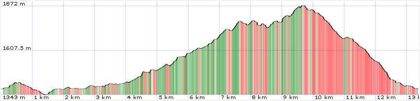
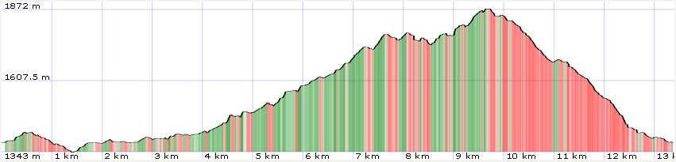

General Information
Map

| data fields | Note |
|---|---|
| number | 001 |
| suitable for |
|
| degree of difficulty |
|
| distance | 14 km |
| difference in altitude | 800 mt D+ e 800 mt D- |
| hiking time | 4h 30' |
| recommended period |
|
| Road surface | dirt road, path, rocky ground |

